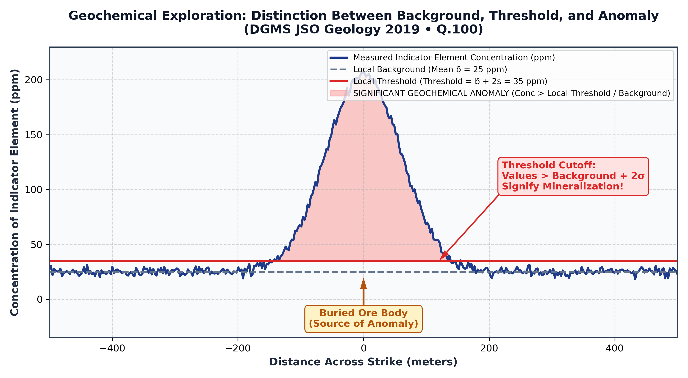

Q.100: Which one of the following can be termed as significant geochemical anomaly in mineral exploration?
In geochemical prospecting (Hawkes & Webb, 1962; Rose et al., 1979; Levinson, 1980), the primary objective is to differentiate between normal barren country rock and abnormal concentrations associated with hidden mineral deposits:

Because natural rocks vary greatly between lithologies (e.g., ultramafic vs. granitic terrains), background levels must be evaluated locally. A significant geochemical anomaly is identified when element concentrations rise prominently above the local background baseline:
| Option | Geochemical Concentration Condition | Exploration Significance | Anomaly Status |
|---|---|---|---|
| (a) | Concentration of indicator elements lower than the local threshold | Represents ordinary unmineralized background rock or geochemical depletion zones. | Not an anomaly |
| (b) | Concentration of indicator elements falling within the regional threshold | Represents normal broad regional background fluctuation across unmineralized terranes. | Not an anomaly |
| (c) | Concentration of indicator elements falling within the local threshold | Represents expected random local background noise in barren host formations. | Not an anomaly |
| (d) | Concentration of indicator elements higher than the local background | Signifies an abnormal accumulation of indicator elements (e.g., Cu, Pb, Zn, Au, As) well above the local barren baseline, indicating primary or secondary dispersion halos of an ore deposit. | Significant Geochemical Anomaly |
In geochemical exploration, an anomaly is fundamentally defined as a concentration of target or pathfinder elements higher than the local background. When this concentration exceeds the threshold (typically x̄ + 2s), it is classified as a significant anomaly indicating proximity to hidden economic mineralization.